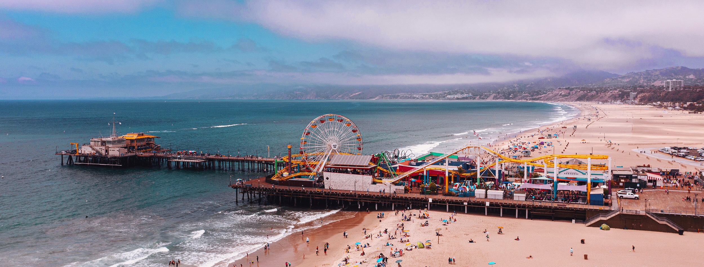

Santa Monica Beach is a popular coastal destination located in the city of Santa Monica, California. With its iconic pier, sandy beaches, and vibrant atmosphere, it offers a wide range of activities and attractions for visitors of all ages.
The Santa Monica Pier is a must-visit landmark, featuring a variety of entertainment options such as amusement park rides, games, and delicious food stalls. Take a ride on the Ferris wheel for panoramic views of the coastline or enjoy a leisurely stroll along the pier while taking in the lively atmosphere.
The sandy beach stretches for miles, providing ample space for sunbathing, picnicking, and beach volleyball. Rent a bicycle or rollerblades and explore the beachside bike path that extends all the way to Venice Beach. You can also take part in various water activities, including swimming, surfing, and paddleboarding.
In addition to the beach and pier, Santa Monica offers a vibrant downtown area with shopping districts, trendy restaurants, and art galleries. Visit the Third Street Promenade, a pedestrian-only street filled with shops, theaters, and street performers. The area also hosts a weekly farmers market, where you can sample local produce and artisanal goods.
Plan your visit to Santa Monica Beach and immerse yourself in the vibrant atmosphere and coastal beauty. Whether you're seeking relaxation, outdoor activities, or a lively entertainment scene, Santa Monica Beach has something for everyone.